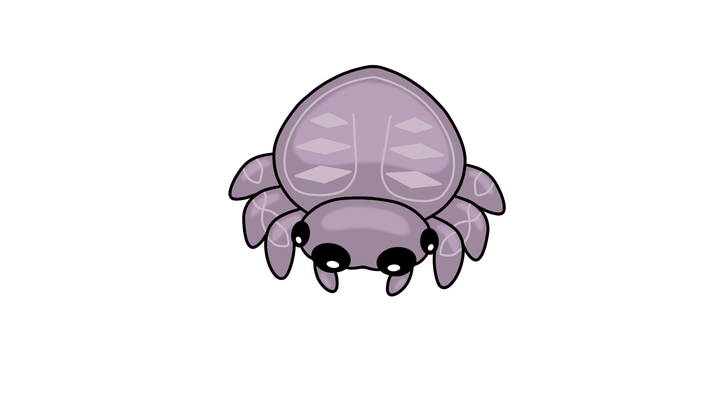
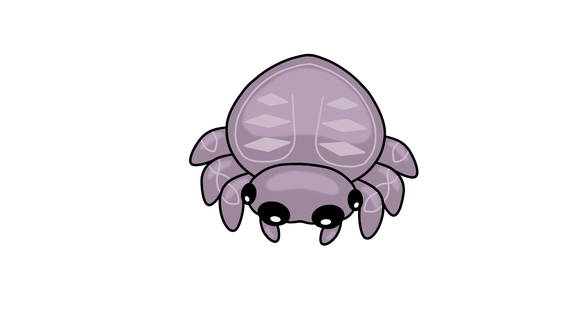

Abstract
Substrate-free two-dimensional (2D) materials are planar assemblies formed directly in solution without relying on any supporting surface or template.

Despite these advantages, achieving controllable substrate-free 2D growth remains challenging. Without the guiding effect of a substrate, flexible monomers and weak noncovalent interactions often lead to random branching, interlayer stacking, or 3D cross-linking, which compromise single-layer uniformity and long-range order. Balancing structural stability and dynamic reconfigurability requires fine-tuning between rigidity (to maintain lattice integrity) and flexibility (to enable defect correction and curvature programming). In life-science contexts, these difficulties are further amplified: assembly must occur in aqueous environments with physiological ionic strength, resist protein adsorption and biochemical disturbances, and avoid cytotoxic components. However, substrate-free systems that simultaneously combine biocompatibility, molecular programmability, and precise 2D-to-3D transformation remain rare, leaving practical bio-oriented solutions largely unresolved.

Our Solution
To address these challenges, we designed a novel system using tetrahedral DNA nanostructures (TDNs) as rigid framework units and G-quadruplexes (G4s) as ion-responsive linking nodes. The TDNs provide modularity and chemical modifiability, while the G4 motifs introduce reversible ion-responsiveness and dynamic connectivity. The integration of the two components achieves a synergistic balance between structural robustness and adaptability, embodying a "1 + 1 > 2" innovation effect.

- Programmable self-assembly enables substrate-free growth of stable 2D DNA membranes.
- Ion-responsive G-quadruplex linkers provide dynamic, reversible connections for ordered membrane growth.
- Synergistic integration of rigid TDNs and flexible G4 linkers achieves precise structural control and scalability.
Beyond achieving a stable 2D material, we further realized precise regulation of curvature and closure. Under finely controlled ionic conditions, the DNA membrane spontaneously folds into large-scale, hollow 3D vesicles—successfully achieving a programmable transition from planar to spherical architectures. This breakthrough opens new opportunities for constructing biocompatible, stimuli-responsive DNA nanovesicles, with broad potential in targeted delivery, biomimetic systems, and intelligent therapeutic platforms.

- Fine-tuned ionic regulation drives curvature transformation from 2D sheets to 3D vesicles.
- Reversible G4 interactions enable self-correcting folding toward energy-minimized vesicle configurations.
- Exosome-like DNA nanovesicles offer an intelligent, biomimetic platform for targeted delivery and microenvironment modulation.
Watch our project demonstration:
📺 Watch on YouTube